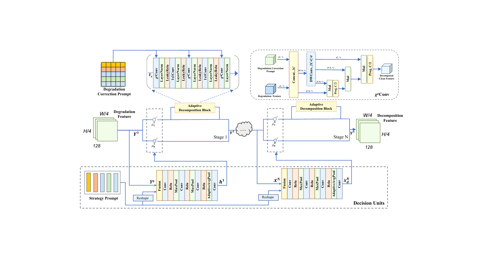
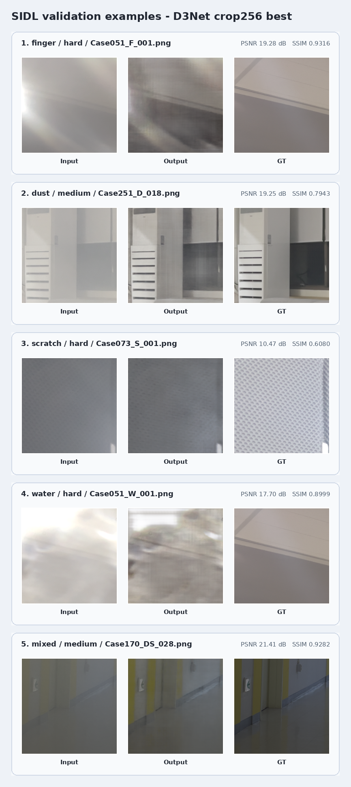

SIDL Dirty Lens Image Restoration
D3Net-based Dirty Lens Image Restoration
Patch-size ablation and failure analysis
Motivation
Dirty lens restoration is not ordinary denoising
- Smartphone lenses are exposed to dust, fingerprint, scratch, water, and mixed residue.
- Contamination creates spatial artifacts and frequency-domain distortion at the same time.
- SIDL provides real-world paired images for supervised dirty lens restoration.
SIDL task
512×512 paired patches
6 contamination types
Easy / Medium / Hard difficulty
Why D3Net?
Original all-in-one benchmark motivates D3Net as the backbone
| Method | Avg. PSNR | Params | FLOPs |
|---|---|---|---|
| AirNet | 25.49 | 8.93M | 75.32G |
| PromptIR | 27.57 | 32.97M | 370.64G |
| IDR | 28.34 | 15.34M | - |
| InstructIR | 29.55 | 15.84M | 37.95G |
| D3Net | 32.36 | 37.80M | 33.67G |
Key idea
Frequency-domain degradation cue
Cross-domain prompts
Dynamic decomposition blocks
Numbers are from the original D3Net five-task benchmark, not from SIDL validation.
Method Overview
D3Net: CDDA prompts + dynamic degradation decomposition

Original D3Net architecture figure from Wang et al., arXiv:2502.19068. In this project, the predicted residual is added to the dirty input for final restoration.
Dynamic Block
DUs select whether ADBs should process degradation-aware features

DDM lets the model adjust the feature-processing path for mixed or local contamination patterns.
Experimental Setup
Controlled main run on SIDL validation split
ModelD3Net, scratch training
DatasetSIDL 512×512 patchified pairs
Main crop256×256 random crop
Validation512×512 PSNR / SSIM
HardwareRTX 4090
ConstraintLimited compute budget
This is an adaptation study, not a claim of SIDL SOTA.
Results
256 crop achieved the best validation PSNR
| Run | PSNR | SSIM |
|---|---|---|
| 128 baseline | 23.33 | 0.8357 |
| 256 main | 23.82 | 0.8398 |
| 256 low-LR | 23.76 | 0.8409 |
| 512 refinement | 23.27 | 0.8336 |
Best epoch34
Easy avg.27.00
Medium avg.25.36
Hard avg.20.33
Ablation & Discussion
Patch size creates a training trade-off
128: context 부족
256: context / augmentation 균형
512: distribution shift + batch size 1
12823.33
25623.82
256 polish23.76
51223.27
Conclusion
Hard Dust / Mixed remains the main bottleneck
Best: 23.82 dB / 0.8398
512 refinement did not improve PSNR
Future: pretrained model, TTA, sampling, loss redesign
Hard Dust16.86 / 0.7065
Hard Mixed17.62 / 0.7843
